En términos elementales podríamos definir un grafo como un conjunto de puntos(llamados elementos, vértices, nudos o nodos) con líneas que unen pares de vértice de ellas; en algunos libros se usa red como sinónimo de grafo. Representación gráfica de los elementos de un conjunto y las relaciones binarias sobre estos.Un grafo G =(V, E, φ), consta de un conjunto V no vacío de vértices, un conjunto E delados del grafo y una funcionφ, la cual es una función de los lados del conjunto E a un conjunto de pares ordenados o no ordenados de los elementos (repetidos o no) de V. Donde los conjuntos V y E del grafo son finitos. Por su parte, la función se conoce como función de incidencia. 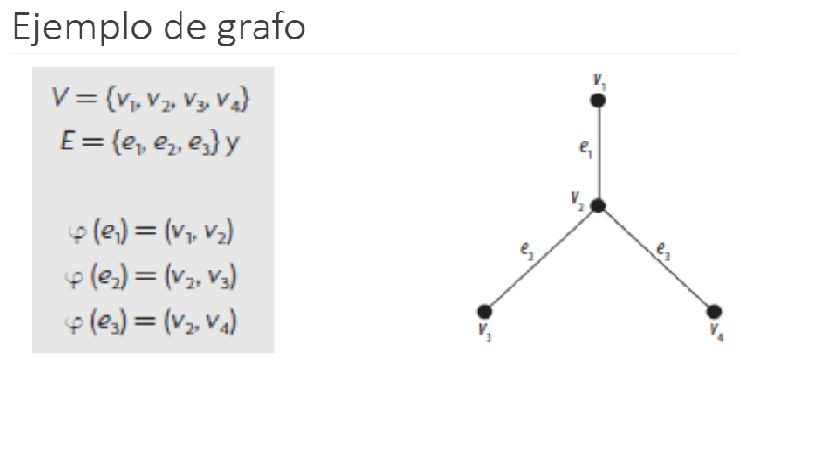
Un grafo dirigido (o dígrafo) G=(V, E) consta de un conjunto V de vértices y un conjunto E de lados, tal que cada e εE esta asociado a un único par ordenado de vértices i, j εV y se escribe e=(i, j). La dirección de un lado en un grafo dirigido se indica mediante una flecha dirigida. 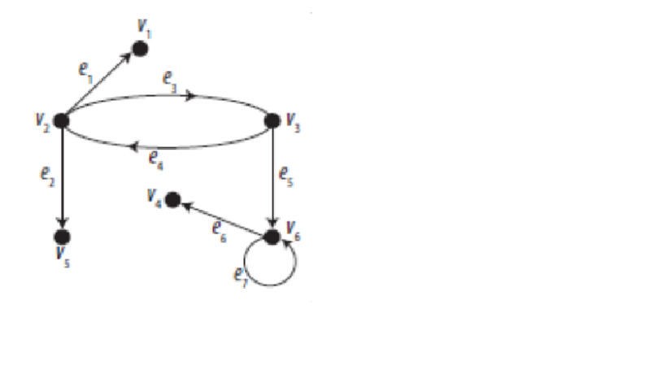
Consta de un conjunto V de vértices y un conjunto E de lados tales que cada lado e está asociado a un par no ordenado de vértices. 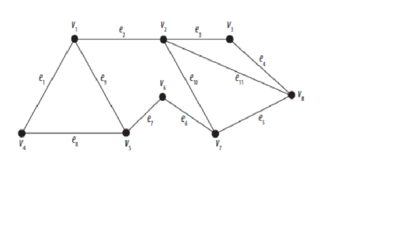
En un grafo (dirigido o no dirigido) G=(V, E), el numero de vértices de G, denotado como |V| o n, se denomina orden del grafo. El numero de lados de G, denotado como |E| o m, se conoce como tamaño del grafo. 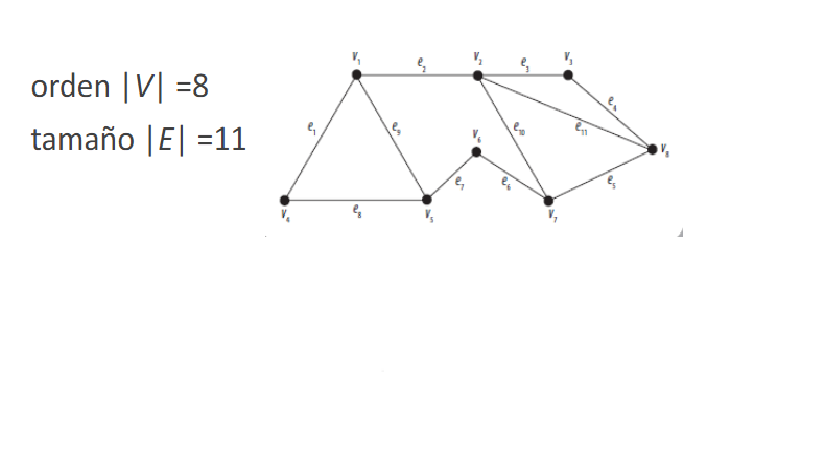 GRAFO FIITO ,INCIDENCIA Y ADYACENCIA. 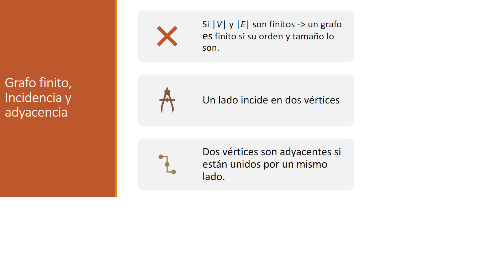
Cuando dos o mas lados distintos son incidentes al mismo par de vértices, estos reciben el nombre de lados paralelos.Un lado de la forma (i, i) que inicia y termina en el mismo vértice se conoce como lazo. 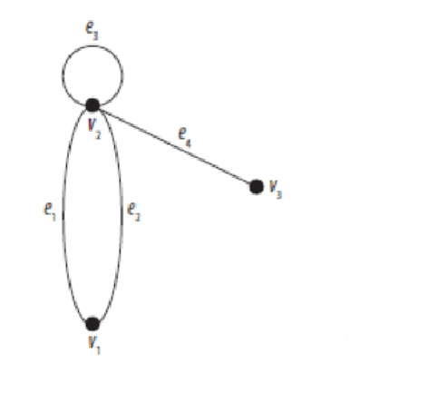
Valencia (o grado) de un vértice, v, es igual al numero de lados incidentes en v, y se denota como δ(v).La suma de las valencias de todos los vértices de un grafo no dirigido, es igual al doble del numero de ladosEn un grafo dirigido se tendrán valencia de entrada y valencia de salida.En el caso de que un vértice sea adyacente consigo mismo, solo se considerara una vez. 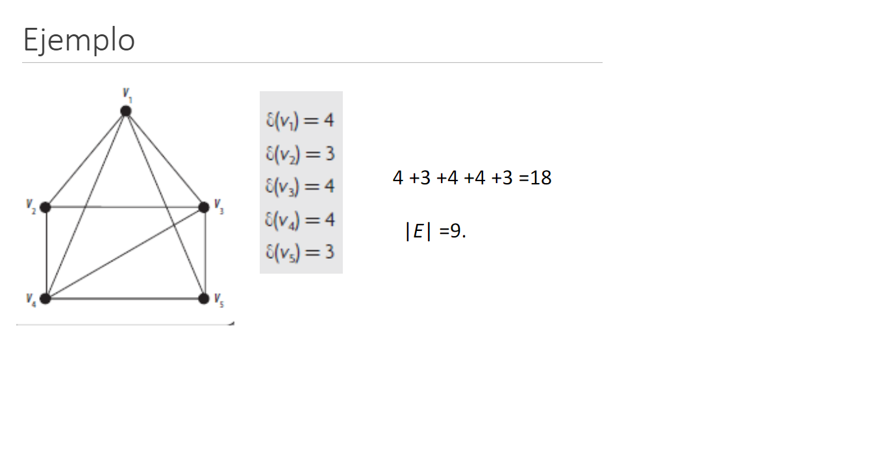
Si el grafo es simple con n vértices y existe un lado entre cada par de vértices distintos.Cada vértice de G debe ser adyacente con todos los demás vértices del grafo.Se denota Kn 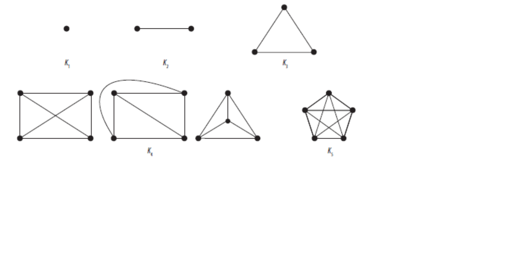 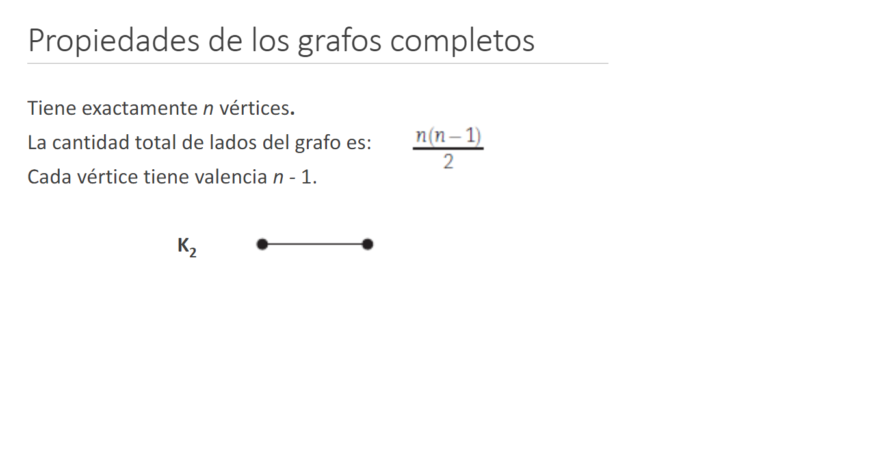 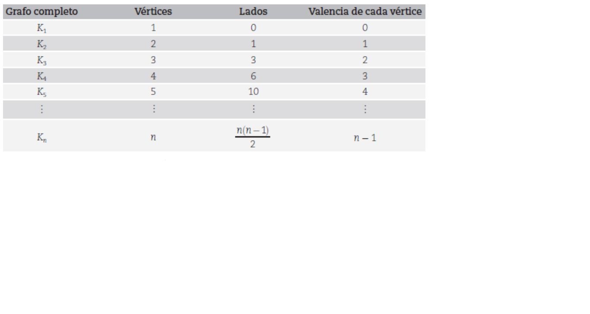
Todo vértice v tiene la misma valenciaEl grafo recibe el nombre de n-regular
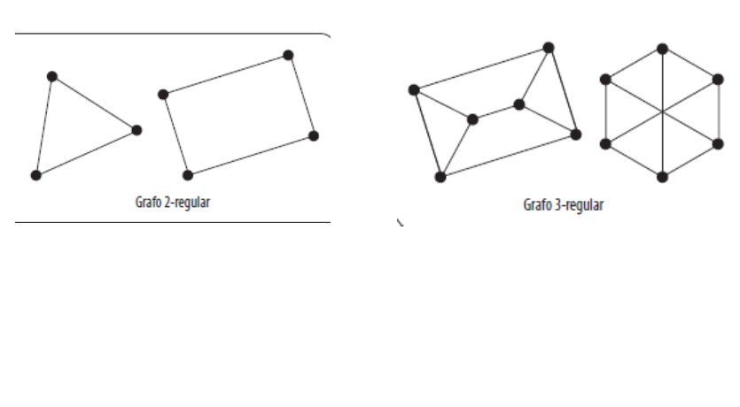
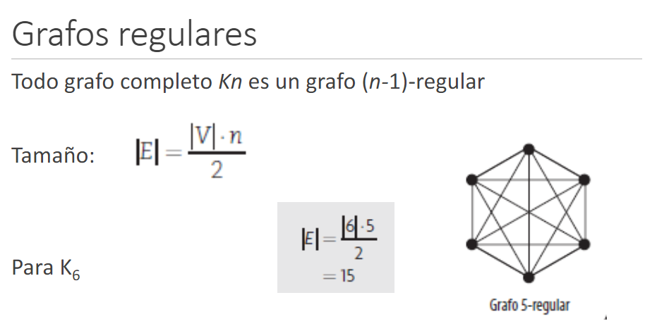
El conjunto de vértices V se puede dividir en dos conjuntos disjuntos no vacíos de vértices V1y V2.
Cada vértice del conjunto V1sea adyacente en los vértices del conjunto V2.
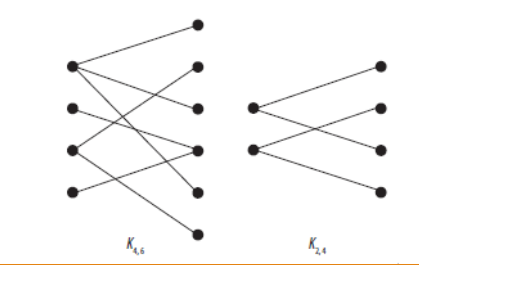
GRAFO BIPARTITA COMPLETO
Todos los vértices del conjunto V1son adyacentes en todos los vértices del conjunto V2.
El grafo bipartita se denota como Km,n
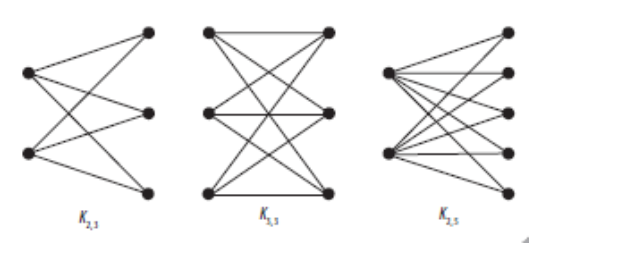
Un grafo G1=(V1, E1) es un subgrafo de G si E1está contenido en E y V1está contenido en V, tal que los lados de E1sean incidentes en los vértices de V1Para obtener un subgrafo a partir de un grafo, se requiere:1. Eliminar lados de G.2. Eliminar vértices de G, se deben borrar todos los lados que tengan por extremo a estos vértices.
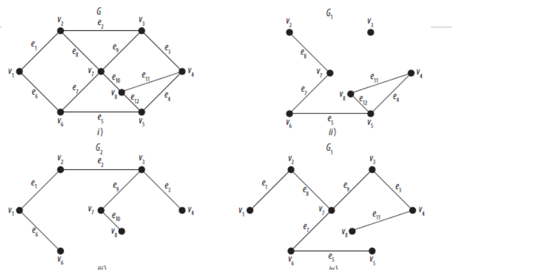
Un grafo no dirigido; se dice que G es un grafo conexo si, para cualquier par de vértices i y j distintos entre si, existe un camino de i a j.
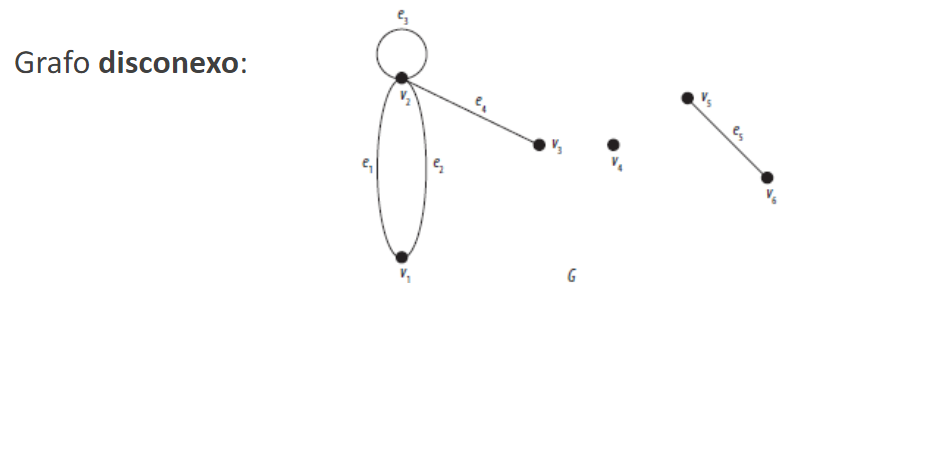
Camino sucesión de lados en la cual todos los lados son distintosentre si.
Camino simple de longitud n de i a j, si es de la forma (v0, v1, v2, ... , vn), donde los vértices son distintos entre si.
Circuito si es un camino de v a v.
Circuito simple si es un circuito de la forma (v0, v1, v2, ... , vn), donde v0=vny los demás vértices son distintos entre si.
Camino (paseo) de Euler (o euleriano) es un camino que incluye todos los lados de un grafo dado una y solo una vez.
Un circuito de Euler (o euleriano) es un circuito que incluye todos los lados de un grafo dado una y solo una vez.
No importa la repetición de vértices, mientras no se repitan los lados.
Condiciones para determinar la existencia de un paseo o circuito de Euler en un grafo no dirigido
Camino hamiltoniano es un camino que pasa a través de cada uno de los vértices de un grafo dado exactamente una vez.
Un circuito hamiltoniano es un circuito que pasa a través de cada uno de los vértices de un grafo dado exactamente una vez.
Al recorrer todos los vértices del grafo, no es importante si no se recorren todos los lados del grafo